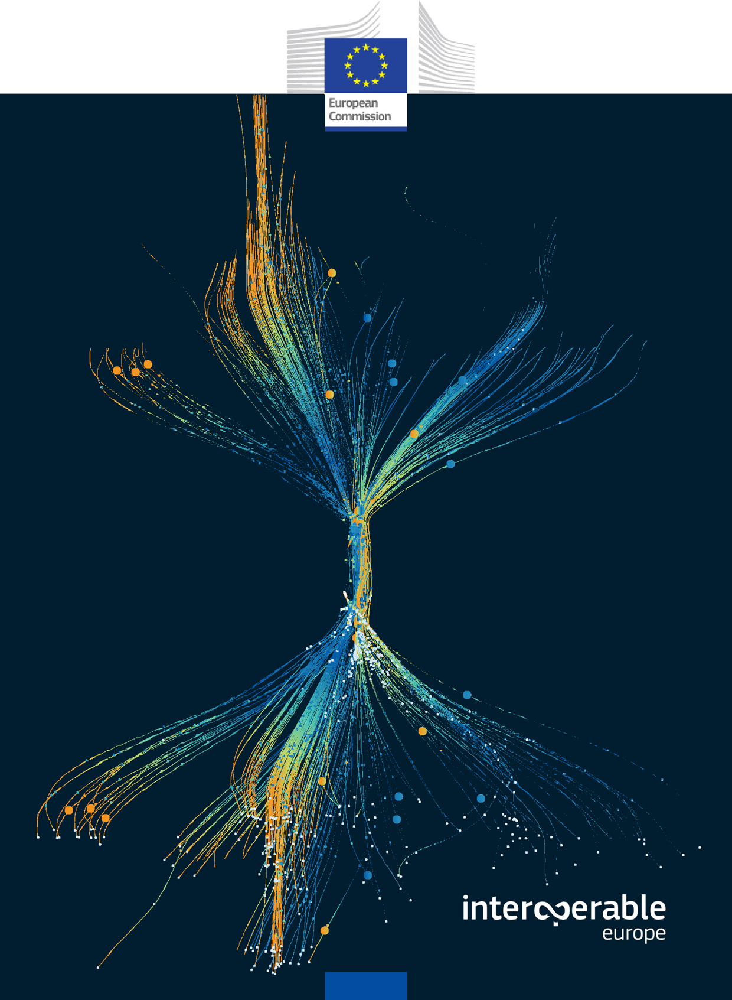

Document Information
{kind=link}

Interoperability Architecture Solutions
Solution Architecture Framework
Directorate-General for Informatics
Reference
eGovERA Solution Architecture Framework (SAF) v1.0.0
Keywords
<EIRA, eGovERA, ABBs, SBBs, ArchiMate, interoperability>
{kind=link}
CHANGE CONTROL
Modification |
Details |
|---|---|
Version 1.0.0 |
|
Current version |
DISCLAIMER
The information and views set out in this publication are those of the author(s) and do not necessarily reflect the official opinion of the Commission. The Commission does not guarantee the accuracy of the data included in this document. Neither the Commission nor any person acting on the Commission’s behalf may be held responsible for the use which may be made of the information contained therein.
© European Union, 2026
European Commission
Directorate-General for Informatics
Directorate B – Digital Public Services, Unit B2 – Interoperability Unit Contact: Catalin Moruju – Project Officer for the Interoperability Architecture Action
E-mail: Catalin.MORUJU@ec.europa.eu
European Commission B-1049 Brussels
Intellectual Property Rights:
The work is licensed under the European Union Public Licence (EUPL) v1.2. Reuse is authorised provided the source is acknowledged.
The reuse policy of European Commission documents is regulated by Decision 2011/833/EU (OJ L 330, 14.12.2011, p. 39).
Foreword
This Specification has been produced by the Interoperability Architecture Solutions team, a Digital Europe (DEP) Programme initiative in alignment with the European Standardisation Regulation 1025/2012
TABLE OF CONTENTS
1.1. Purpose of this Specification 8
1.4. Relationship to Other Frameworks and Standards 9
1.4.1. Alignment of EIRA with EIF 9
1.4.2. Alignment of EIRA with TOGAF 9
1.4.3. Alignment of EIRA with PAAF (Public Administration Architecture Framework) 9
1.5. Document Conventions and Terminology 9
2.1. Overview of the European Interoperability Framework (EIF) 11
2.2. Overview of the European Interoperability Reference Architecture (EIRA) 11
3. Main life-cycle management approaches for Interoperable Solutions implementation 14
3.1. Implementation Based on Tranches 16
3.1.2. Segmentation Criteria for Tranches 17
3.1.4. Role of Tranches in Life-Cycle Approaches 17
3.2. Implementation Based on Increments 17
3.2.1. Concept of Increment 17
3.2.2. Incrementation Criteria 17
3.2.4. Role of Increments in Life-Cycle Approaches 18
3.3. Delivery Methodologies 18
3.3.1. Linear Waterfall Approach 18
3.3.2. Incremental Waterfall Approach 20
3.3.3. Linear Agile Approach 22
3.3.4. Incremental Agile Approach 23
4. eGovERA Architecture Implementation Method 27
4.1. Analysis of the target Interoperable Solution 27
4.2. Design of the target Interoperable Solution 27
5. eGovERA Solution Architecture Framework 30
5.4. Reference Architectures and Enablers 34
5.5.1. Architecture Building Blocks (ABBs) 34
5.5.2. Solution Building Blocks (SBBs) 35
5.6. Governance and Review Process 36
5.6.1. Conformance and Compliance 36
5.6.3. Maintenance and Evolution 37
6. Usage Guidance and Methodology for an Intervention 39
6.1. Show how to use the RA in an intervention. 39
6.1.1. Lifecycle Phases of an Intervention 40
6.2. Align RA with portfolio management and strategy planning. 42
7. Model Creation Supporting Tools 44
7.1.1. Archi Modelling Tool 44
7.1.3. Cartography Tool (Cartool) 44
7.1.4. Test and Conformance Using Interoperability Test Bed 45
8.3. Conventions Used for Lifecycle Management Figures 51
TABLE OF FIGURES
Figure 1 Development Lifecycle Management 14
Figure 2 Linear Waterfall – Approach 19
Figure 3 Linear Waterfall – Segmentation by View 19
Figure 4 Linear Waterfall – Segmentation by DBC 20
Figure 5 Incremental Waterfall – Approach 20
Figure 6 Incremental Waterfall – Segmentation by View 21
Figure 7 Incremental Waterfall – Segmentation by DBC 21
Figure 8 Linear Agile – Approach 22
Figure 9 Linear Agile – Segmentation by View 22
Figure 10 Linear Agile – Segmentation by DBC 23
Figure 11 Incremental Agile – Approach 23
Figure 12 Incremental Agile – Segmentation by View 24
Figure 13 Incremental Agile – Segmentation by DBC 24
Figure 15 Organisational View 31
Figure 17 Technical View - Application 32
Figure 18 Technical View – Infrastructure 33
Figure 19 Phases of an Intervention 40
LIST OF TABLES